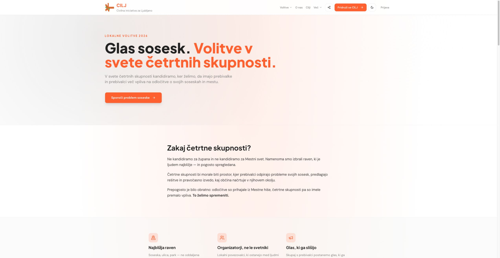

Skupen vizualni jezik.
Osnova za našo pobudo.
Barve, pisave in elementi strani CILJ, zbrani na enem mestu. Najprej pregledamo identiteto, potem jo prenesemo na stran pobude.
Barvna paleta
#FF6B35#252525#8E8E8E#FFFFFF#F7F7F7#EBEBEBIzmerjene barve svetle teme. Oranžna nosi poudarke in akcije; nevtralne površine dajejo prostor vsebini.
--primary siv, oranžna #FF6B35 pa je določena neposredno v razredih elementov. Tukaj je shranjena dejansko izrisana barva.Barve za grafikone in zemljevid
Predlagana razširitev naše knjižnice. Oranžna ostane povezava z identiteto CILJ.
Kategorije · šest stalnih barv
#FF6B35#2878B5#21856B#8860A7#C49A20#C65D83Za različne teme, skupine ali vrste pobud. Ista kategorija ima na grafikonu in zemljevidu isto barvo; dodamo tudi oznako ali simbol.
Vrednosti na zemljevidu · od manj do več
#FFF0E8#FDCDB5#FA9A70#E36536#A83916#D9DDE2Svetlejše = nižja vrednost, temnejše = višja vrednost. Meje razredov določimo po podatkih. Siva pomeni manjkajoč podatek, ne ničle.
Dve pisavi, jasna hierarhija
0123456789 & ! ?
0123456789 & ! ?
Klikni veliki vzorec in preizkusi svoje besedilo. Pisavi sta shranjeni lokalno, vključno s šumniki. DM Sans vključuje tudi debelino 700.
Jakarta · 800 · namizje
Jakarta · 700
Jakarta · 700
DM Sans · 400
Jakarta · 700 · razmik 2,8 px
H1 na izvirniku: 36 px na majhnih, 48 px od 640 px in 72 px od 768 px. H2: 30 → 36 px. Katalog na ozkih zaslonih velike vzorce prilagodi prostoru.
Gradniki in grafični elementi
1 px obroba · polmer 10 px · besedilo 14 px. Vnos ostane v tem pregledniku.
Pomembna misel dobi oranžno črto in dovolj prostora, da pride do izraza.
Oznaka: oranžna pri 10 %, polna zaoblitev.
Poudarek: leva črta 4 px, odmik 16 px.
Povezovanje prebivalcev
Linijska ikona, naslov in kratek opis. Osnoven vzorec za predstavitev namenov in načinov sodelovanja.
Prostor za lokalno temo
Bela površina, tanka siva obroba in umirjena tipografija. Brez močne sence.
Polmer 12 px · odmik 20 px · obroba #EBEBEB.
Ikonografija
17 izvornih SVG ikon Lucide. Mreža 24 × 24, poteza 2 px, zaobljeni zaključki. V gumbih običajno 16–20 px, v poudarkih 24 px.
Prostor, površine in ritem
Nežen oranžen sij.
Radialni prehod: oranžna pri 10 % → bela.
Navpični odmiki odsekov: 64 / 96 px.
Robovi vsebine: 16 / 24 / 32 px.
Bralni stolpec: največ 896 px.
Vsebinska mreža: največ 1024 px.
Razmik med tremi stolpci: 32 px.
Pogosto uporabljeni odmiki v px. Dodatni vrednosti v izvorni postavitvi: 56 in 112 px.
Izvirnik in lokalni paket


Preverjeno na izrisani strani.
Barve, pisave, tipografija in oblike so povzete iz dejanskih slogov strani. Logotip zgoraj je izvorni znak CILJ, shranjen kot referenca.
Ta katalog je nova lokalna predstavitev. Struktura strani pobude in njena končna identiteta prideta na vrsto po skupnem pregledu.